Karten-Assets von Hollow Crown
Geprüft wurde alles, was auf dem Brett steht, im echten Spiellicht und an den abgenommenen Entwürfen von Akt 1. Maßstab sind die 35 Missionen der Staffel.
Das Wichtigste
Die Einzelmodelle sind besser als das, was aus ihnen entsteht. Häuser, Bäume, Wagen und Zäune sind solide. Schwach ist alles, was aus Geländefeldern zusammengesetzt wird: Mauer, Tor, Berg, Höhle, Sumpf. Genau das trägt die Story.
- Die Burg liest sich als Grundriss. Die Paktwacht ist das Herz von Akt 1, zu sehen sind flache Steinplatten auf orangem Boden. Es gibt keine Zinnen, keine Türme, kein Tor, nur Rahmen aus Kisten.
- Berg und Höhle sehen aus wie eine Wiese mit Felsbrocken. Im Gewölbe 1-7 wächst Gras zwischen den Felsen. Niemand sieht, dass man dort nicht durchkommt.
- Überall dasselbe Wasser. Fluss, Furt und Sumpf teilen sich ein Türkis, obwohl das eine begehbar ist und das andere nicht.
- Hebel und Balliste sind unsichtbar. Das Spiel kennt beide Objekte, das Brett zeichnet sie nicht. Beide werden von Missionen gefordert.
- Die Jahreszeit endet an den Bäumen. Es gibt nur einen Grasboden. Akt 3 wäre heute Schneefichten auf Sommerwiese.
Der Bestand im selben Licht
Alle Modelle im Mittagslicht des Spiels, gleicher Maßstab, ganz links je eine Figur.
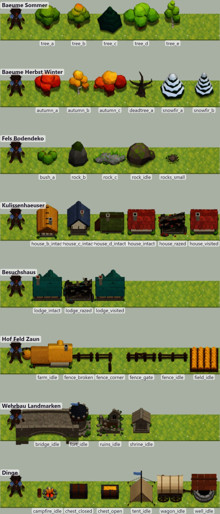
So sieht es auf dem Brett aus
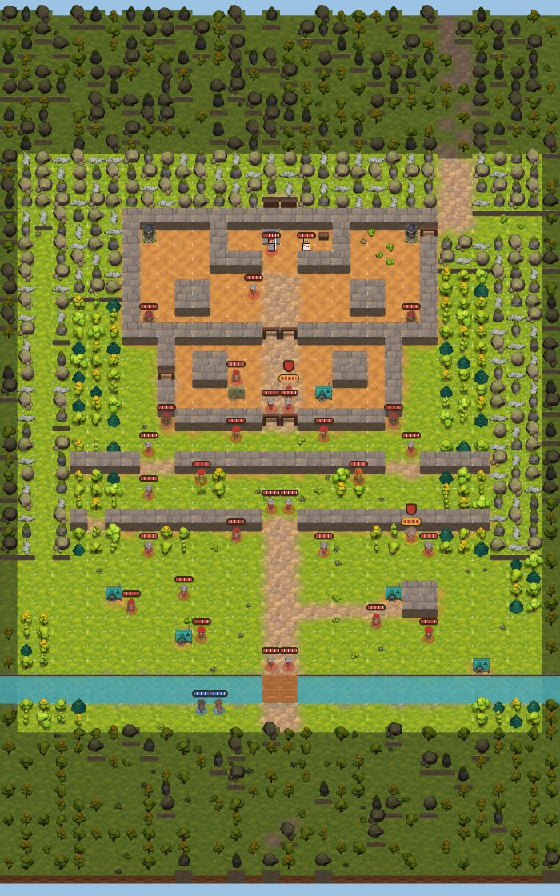
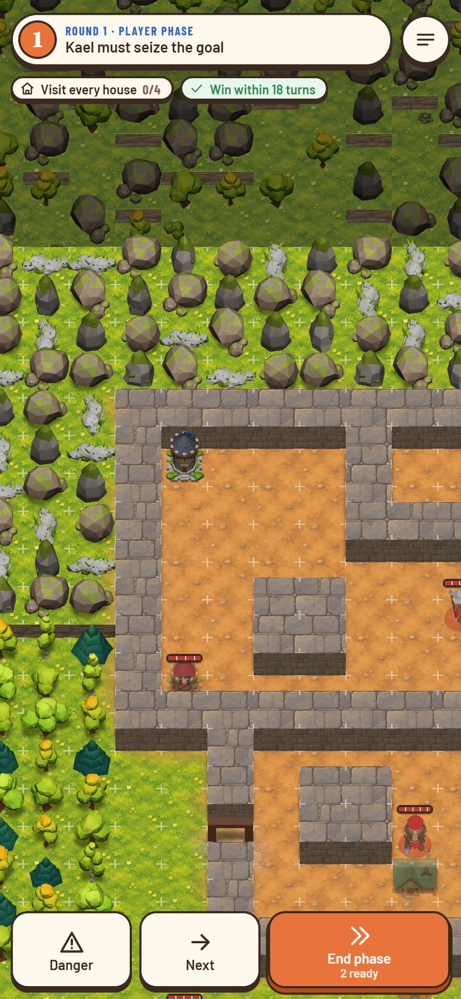
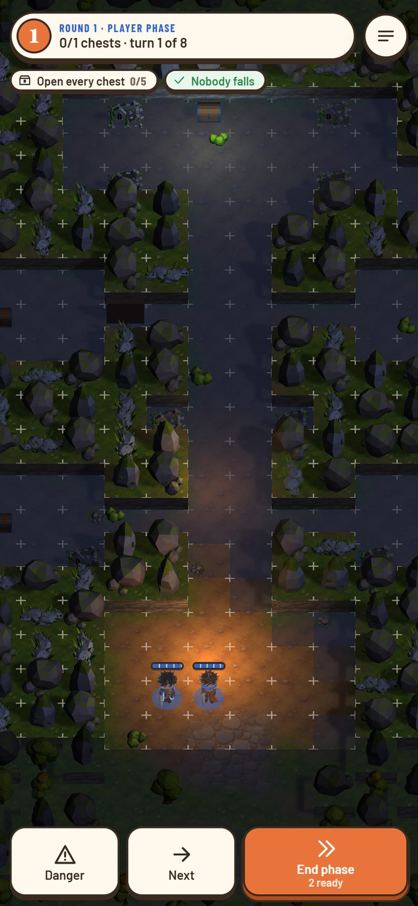
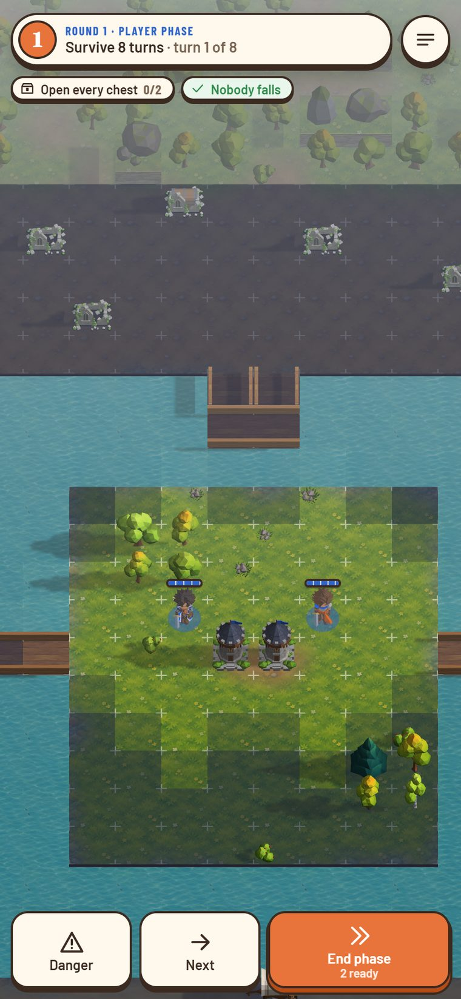
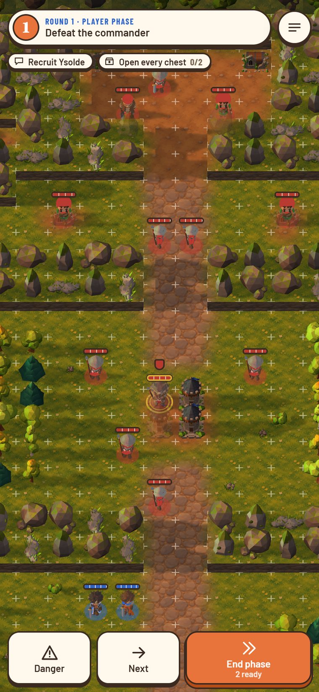
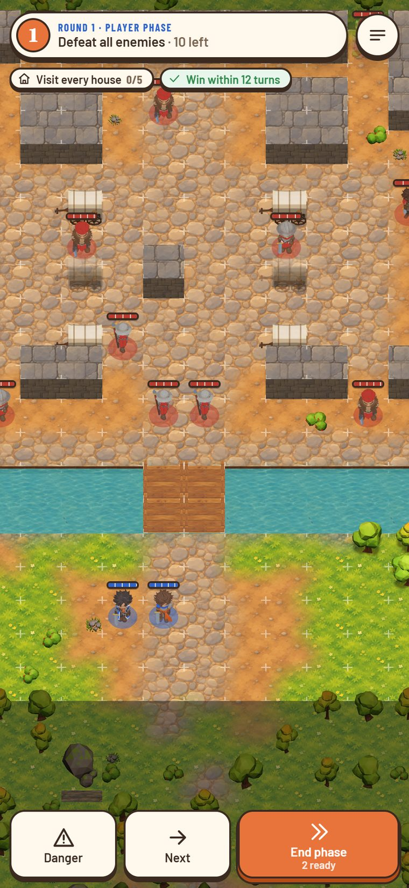
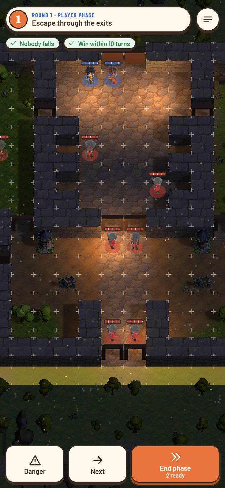
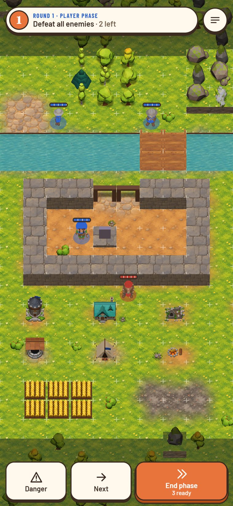
Spielklarheit: sieht man die Wirkung?
Gemessen an content/core/terrain.yaml. Rot sind Stellen, an denen gleiche Wirkung verschieden aussieht oder verschiedene Wirkung gleich.
| Wirkung im Spiel | Gelände | Was man heute sieht | Befund |
|---|---|---|---|
| Sperrt alle | Mauer, Felswall, Tür zu | Platte, Felsnadeln, Kiste | drei Sprachen |
| Sperrt, nur Flieger drüber | Wagen, Marktstand, Kohlebecken, Brunnen, Zaun, Hof, Haus | Kleine Dinge, zwischen denen man Platz vermutet | Staffel 1 hat keine Flieger: wirkt wie „sperrt alle“, sieht aber durchlässig aus |
| Begehbar und Haus | Besuchshaus | Haus wie die gesperrten, nur Türkis | gleich aussehend, andere Wirkung |
| Deckung, langsamer | Wald +1 / +20 | Ein dünner Baum, Büsche daneben ohne Wirkung | Deko sieht aus wie Deckung |
| Viel Deckung, Heilung | Festung, Schrein | Turm bzw. Kapelle ohne Zeichen | Heilung unsichtbar |
| Nichts | Grabrelief | Exakt das Modell des Schreins | gleiches Bild, andere Wirkung |
| Begehbar, teuer | Flachwasser | Fast wie Fluss | kaum unterscheidbar |
| Begehbar, kostenlos | Feld | Fest umrahmtes Gelb | sieht nach Gehege aus |
| Engstelle, Deckung, erobern | Tor | Holzrahmen je Feld | kein Tor zu erkennen, Regel offen |
| Höhe | nur optisch | 0,5 bzw. 0,85 Felder | Aus der Spielkamera kaum sichtbar, und ohne Regelwirkung |
Vorschlag: vier Regeln für jedes Asset
- Sperrt es, füllt es das Feld. Geschlossener Fuß bis an die Feldkante, höher als eine Figur. Kein Blick auf Boden daneben.
- Ist es begehbar, bleibt die Mitte frei. Boden sichtbar, die Figur steht im Asset: Wald als Bäume am Feldrand, Ruine als Trümmerring, Feld ohne Rahmen.
- Deko ist flach. Was keine Wirkung hat, bleibt unter Knöchelhöhe. Büsche, die wie Deckung wirken, ziehen an den Feldrand oder werden kleiner.
- Gleiche Wirkung, gleiche Form, in jeder Region. Wechseln dürfen nur Material und Farbe. Eine Mauer im Schnee ist dieselbe Mauer mit Schneehaube.
Vielfalt je Region, günstig gebaut
Statt jedes Modell dreimal zu bauen: Form × Material × Zustand. Die Bauskripte in tools/art/props/ tragen schon Vertex-Farben, also kostet eine neue Region nur eine Farbtabelle.
| Süden, Spätsommer (Akt 1) | Hochland, Herbst (Akt 2) | Norden, Winter (Akt 3) | |
|---|---|---|---|
| Stein | warmer Sandstein | Schiefergrau, Kupferader | kühles Blaugrau, Schneehaube |
| Dach | Ziegelrot, Stroh | Schieferplatten, Holzschindeln | dunkle Schindeln, Schnee |
| Boden | Gelbgrün, Erde | Rostgras, Laub | Schnee, Harsch, Eis |
| Wasser | Türkis, Moor-Braungrün | Grün-grau, Gischt | Stahlblau, Eisschollen |
| Bäume | Laubbaum, Birke | Herbstfarben, Fichte | Schneefichte, kahl |
| Eigenes | Fachwerk, Korn, Wein | Kloster, Schiefer, Hafen | Palast, Kanäle, Gletscher |
Schnee zur Ladezeit: Beim Laden eines Modells färbt das Brett nach oben weisende Flächen weiß. Das macht jedes vorhandene Modell winterfest, ganz ohne neue Datei. Gelände-Kit: Mauer, Fels und Höhle bekommen Eck-, Geraden- und Endstücke, die sich nach den Nachbarfeldern wählen, wie das Gelände das heute schon für den Boden tut.
Zielbilder: vorher und nachher
Links das heutige Brett, rechts ein gemaltes Zielbild auf derselben Karte. Die Bilder zeigen die Richtung, nicht den späteren 3D-Stand. Sie sind Skizzen und kommen nicht ins Spiel.
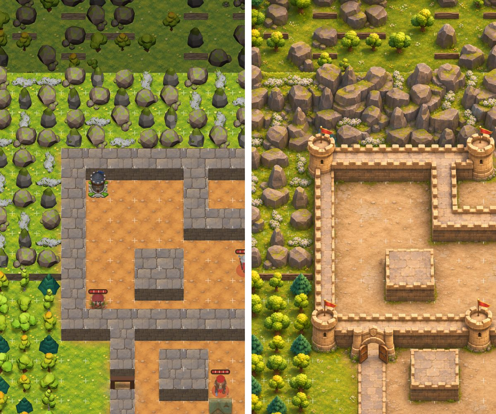
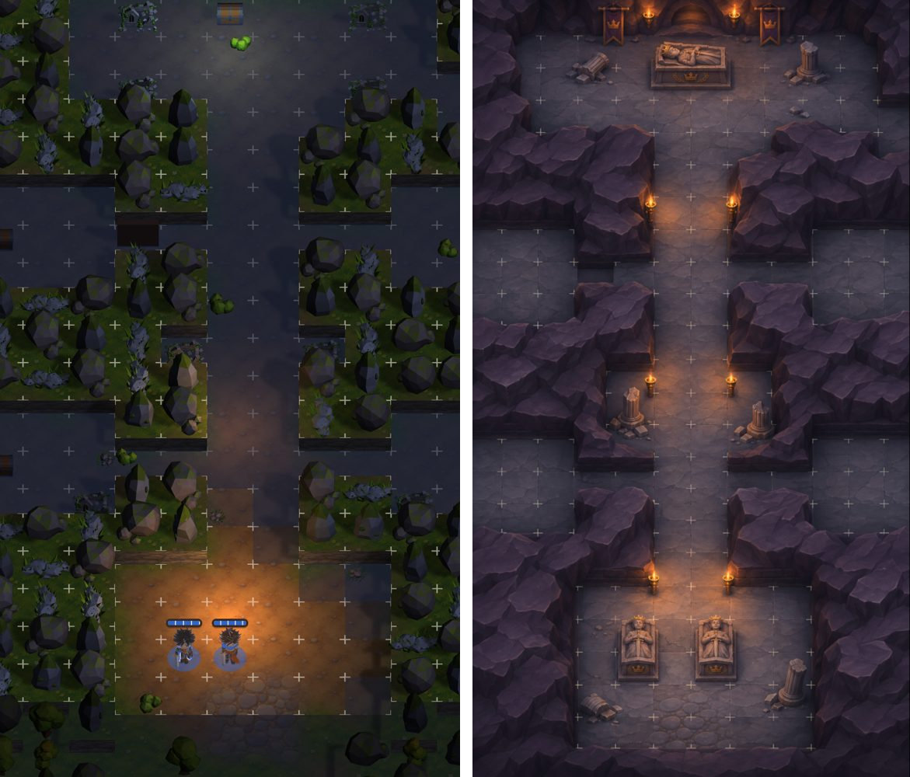
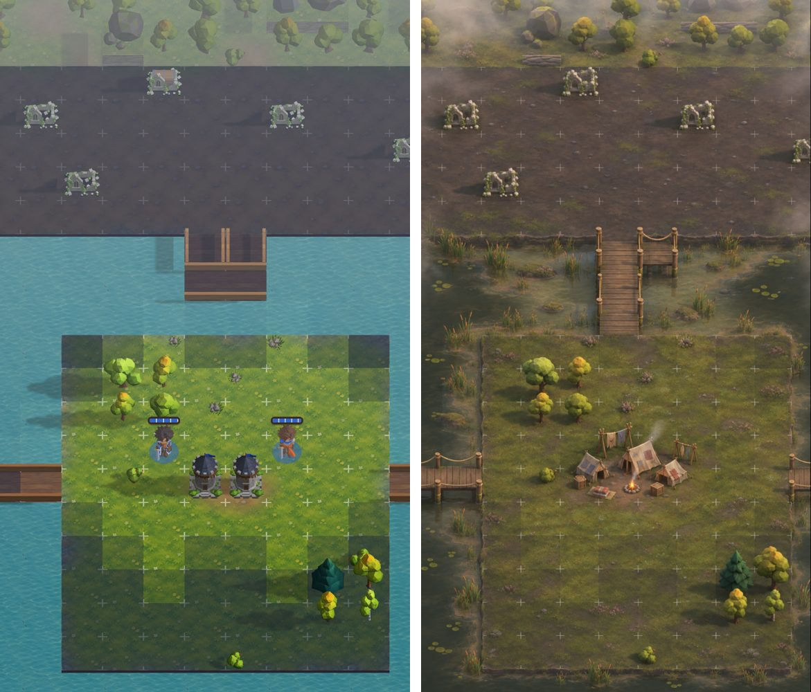
Regeln, die Marvin entscheiden muss
Für diese Punkte fordert die Story etwas, das die Regeln nicht kennen.
Bauplan nach Missionen
Zahl = so viele Missionen brauchen das Asset. Reihenfolge: was früh im Spiel und oft vorkommt, zuerst.
Etappe 1: Formensprache und Grundbau
Akt 1 und alle späteren Burgen
Fels als Masse, Mauer mit Zinnen, Turm, ein echtes Tor, Tür, Thron, Rampe, Hebel, Wald-Nest, Furt lesbar, Feld ohne Rahmen. Das Probeset stammt aus dieser Etappe.
- Wald15 Missionen
- Berg, Felsmasse15 Missionen
- Mauer9 Missionen
- Furt, Flachwasser8 Missionen
- Besuchshaus7 Missionen
- Tor6 Missionen
- Tür, offen und zu6 Missionen
- Festung6 Missionen
- Steinbrücke6 Missionen
- Mauerturm, Ecke5 Missionen
- Rampe, Stützmauer, Terrasse4 Missionen
- Thron4 Missionen
- Holzbrücke4 Missionen
- Kornfeld4 Missionen
- Hebel3 Missionen
Etappe 2: Akt-1-Sonderorte
1-5, 1-7, N1, N3, Prolog
Sumpf, Steg, Höhle, Grabrelief, Säule, Dach, Mühle, Fackeln, Marktstand, Wehrgang, Bresche.
- Fackel, Wandleuchte11 Missionen
- Lagerfeuer, Kohlebecken6 Missionen
- Höhlenboden und Felswand innen4 Missionen
- Wehrgang, Treppe4 Missionen
- Bresche, Trümmer in der Mauer3 Missionen
- Steg, Bohlenweg3 Missionen
- Säule, Säulengang3 Missionen
- Sumpf, Schilf, Priele2 Missionen
- Schrein2 Missionen
- Grabrelief, Sarkophag2 Missionen
- Marktstand2 Missionen
- Begehbares Dach1 Missionen
- Mühle mit Rad1 Missionen
Etappe 3: Regionen
alle Akte
Herbst- und Winterboden, Schneehauben, Materialsätze je Region für alle vorhandenen Modelle.
- Boden Schnee, Schneehauben10 Missionen
- Boden Herbst9 Missionen
Etappe 4: Akt 2
2-1 bis N6
Balliste, Koppel, Terrassen, Klippe, Hängebrücke, Hafen, Schiff, Bergwerk.
- Klippe, Absturzkante7 Missionen
- Schiff, Boot5 Missionen
- Kai, Lagerhaus, Kran2 Missionen
- Wasserfall1 Missionen
- Hängebrücke1 Missionen
- Koppel, Stall, Gestüt1 Missionen
- Getreideterrasse, Bergdorf1 Missionen
- Balliste1 Missionen
- Gaukelbühne, Markt-Deko1 Missionen
- Stollen, Lore, Schienen1 Missionen
- Drachenknochen1 Missionen
Etappe 5: Akt 3
3-1 bis N10
Eis, Stadt und Kanal, Palast, Gletscher, Glutrisse, schlafender Drache.
- Eis mit Bruchstellen3 Missionen
- Stadthaus hoch, Gasse3 Missionen
- Palast: Fliesen, Teppich, Empore3 Missionen
- Kanal, Schleuse3 Missionen
- Gletscher, Spalten, Lawine1 Missionen
- Glutrisse, Krater1 Missionen
- Eisbrücke1 Missionen
- Bücherregal als Wand1 Missionen
- Wagenburg1 Missionen
- Schlafender Drache als Gelände1 Missionen
- Urtempel, Gletscher-Ruine1 Missionen
Matrix: Mission × Asset
vorhandenverbessernfehlt
| # | Mission | Region | Bedarf |
|---|---|---|---|
| P | Die Paktnacht Tempelbezirk, Höfe, Säulengänge, Nacht | Stadt | Mauerturm, EckeSäule, SäulengangFackel, WandleuchteMauerTorTür, offen und zuLagerfeuer, KohlebeckenGras, Erde, Straße |
| 1-1 | Steckbriefe Varnhold, Markt, Brücke | Süd | BesuchshausMarktstandSteinbrückeFurt, FlachwasserMauerFestungGras, Erde, StraßeKulissenhäuserWagenFluss |
| 1-2 | Asche über Erlbach Dorf am Bach, Kornfelder, Furten | Süd | BesuchshausKornfeldFurt, FlachwasserHolzbrückeWaldGras, Erde, StraßeKulissenhäuserZaunFluss |
| 1-3 | Der Fremde mit dem Siegel Grenzwald, Lichtung, Schrein | Süd | Steg, BohlenwegWaldSchreinFurt, FlachwasserGras, Erde, StraßeRuineTruhe |
| 1-4 | Die Spur des Maklers Wolfshügel, Felsen, Höhlen | Süd | HebelBerg, FelsmasseWaldFestungLagerfeuer, KohlebeckenGras, Erde, StraßeRuineTruheZelt, Lager |
| 1-5 | Das Hungerlager Erlenmoor, Stege, Nebel | Süd | Sumpf, Schilf, PrieleSteg, BohlenwegSchiff, BootWaldGras, Erde, StraßeZelt, LagerRuineSand, StrandWagenTruhe |
| 1-6 | Die Paktwacht Burgruine, Sturm bergauf über Terrassen | Süd | Mauerturm, EckeRampe, Stützmauer, TerrasseWehrgang, TreppeBerg, FelsmasseWaldMauerTorTür, offen und zuThronFestungKornfeldSteinbrückeFurt, FlachwasserBesuchshausGras, Erde, StraßeTruhe |
| 1-7 | Unter der Paktwacht Gewölbe im Fels, Gräber | Innen | Höhlenboden und Felswand innenGrabrelief, SarkophagFackel, WandleuchteBerg, FelsmasseTür, offen und zuRuineTruhe |
| 1-8 | Die Heimat halten Paktwacht, zwei Fronten | Süd | Mauerturm, EckeRampe, Stützmauer, TerrasseWehrgang, TreppeBresche, Trümmer in der MauerBerg, FelsmasseWaldMauerTorTür, offen und zuThronFestungKornfeldSteinbrückeBesuchshausLagerfeuer, KohlebeckenGras, Erde, Straße |
| N1 | Der Ring von Varnhold Nacht, Dächer, Gassen | Süd | Begehbares DachFackel, WandleuchteMauerTorHolzbrückeGras, Erde, StraßeKulissenhäuserFlussTruhe |
| N2 | Der letzte Wachturm Grenzmauer, Hügel | Süd | Mauerturm, EckeBresche, Trümmer in der MauerMauerFestungBerg, FelsmasseWaldGras, Erde, StraßeRuineTruhe |
| N3 | Das Erbe Pachthof, Mühle, Fluss | Süd | Mühle mit RadKornfeldBesuchshausFurt, FlachwasserHolzbrückeWaldGras, Erde, StraßeZaunKulissenhäuserFlussTruhe |
| 2-1 | Wind über der Eisenmark Windscharte, Ballisten auf Felsnasen | Hochland | Boden HerbstBallisteKlippe, AbsturzkanteRampe, Stützmauer, TerrasseBerg, FelsmasseWald |
| 2-2 | Das Siegel im Salzpass Pass, Nebel, Steinschlag | Hochland | Boden HerbstKlippe, AbsturzkanteBerg, FelsmasseTruheWagen |
| 2-3 | Die Rabenweide Gestüt, Weiden, Koppelzäune, Furten | Hochland | Boden HerbstKoppel, Stall, GestütFurt, FlachwasserWaldZaunFlussKulissenhäuser |
| 2-4 | Die Brandschneise Bergdorf, Getreideterrassen, Wald | Hochland | Boden HerbstGetreideterrasse, BergdorfRampe, Stützmauer, TerrasseBesuchshausWaldBerg, FelsmasseKulissenhäuser |
| 2-5 | Die verstoßene Leibwache Kloster, Hängebrücken, Wasserfall | Hochland | Boden HerbstHängebrückeWasserfallKlippe, AbsturzkanteSchreinMauerBerg, FelsmasseFluss |
| 2-6 | Gold für Banditen Krähenholm, Strand, Ebbe, Schiff | Küste | Boden HerbstKlippe, AbsturzkanteSchiff, BootKai, Lagerhaus, KranBerg, FelsmasseFurt, FlachwasserSand, StrandZelt, Lager |
| 2-7 | Das Kontor am Silbermeer Lagerhäuser, Kräne, Kais | Küste | Boden HerbstKai, Lagerhaus, KranSchiff, BootSteinbrückeKulissenhäuserWagenFlussTruhe |
| 2-8 | Kronfeld Ebene, Hügel, Fluss | Hochland | Boden HerbstBerg, FelsmasseWaldFurt, FlachwasserSteinbrückeFestungFlussZelt, LagerWagen |
| N4 | Der Clan im Schnee Bergwald, früher Schnee | Hochland | Boden Schnee, SchneehaubenWaldBerg, FelsmasseLagerfeuer, KohlebeckenZelt, Lager |
| N5 | Glut unter dem Berg Bergwerk, Loren, Schächte | Innen | Höhlenboden und Felswand innenStollen, Lore, SchienenDrachenknochenFackel, WandleuchteTruhe |
| N6 | Die Gauklertruppe Herbstmarkt, Boote, Bühne | Küste | Boden HerbstGaukelbühne, Markt-DekoSchiff, BootMarktstandHolzbrückeFlussWagen |
| 3-1 | Winter über Aurenhall Gänge unter dem Palast, Türen | Innen | Höhlenboden und Felswand innenPalast: Fliesen, Teppich, EmporeHebelFackel, WandleuchteTür, offen und zuTruhe |
| 3-2 | Das verbotene Lied Sängerviertel, Kanäle, Boote, Schnee | Stadt | Boden Schnee, SchneehaubenStadthaus hoch, GasseKanal, SchleuseSchiff, BootFackel, WandleuchteSteinbrücke |
| 3-3 | Die Einsiedlerin Winterwald, gefrorener Bach | Winter | Boden Schnee, SchneehaubenEis mit BruchstellenWaldBesuchshausBerg, FelsmasseKulissenhäuser |
| 3-4 | Der Zweifler Lager auf dem gefrorenen See, Schilf | Winter | Boden Schnee, SchneehaubenEis mit BruchstellenSumpf, Schilf, PrieleLagerfeuer, KohlebeckenZelt, LagerWagen |
| 3-5 | Die Krönung Glutdom, Halle, Emporen, Vorplatz | Stadt | Boden Schnee, SchneehaubenPalast: Fliesen, Teppich, EmporeSäule, SäulengangWehrgang, TreppeFackel, WandleuchteThronTorMauer |
| 3-6 | Das Südtor Mauer, Tor, Gassen | Stadt | Boden Schnee, SchneehaubenMauerturm, EckeWehrgang, TreppeBresche, Trümmer in der MauerStadthaus hoch, GasseKanal, SchleuseFackel, WandleuchteMauerTorWagen |
| 3-7 | Der Weg ins Gebirge Gletscher, Spalten, schlafender Drache | Winter | Boden Schnee, SchneehaubenGletscher, Spalten, LawineKlippe, AbsturzkanteSchlafender Drache als GeländeEis mit BruchstellenBerg, Felsmasse |
| 3-8 | Im Drachengebirge Urtempel im Krater, Glutrisse | Winter | Boden Schnee, SchneehaubenGlutrisse, KraterEisbrückeUrtempel, Gletscher-RuineKlippe, AbsturzkanteSäule, SäulengangBerg, FelsmasseThron |
| N7 | Verwiesen Akademie, Regale als Wände | Innen | Palast: Fliesen, Teppich, EmporeBücherregal als WandFackel, WandleuchteTür, offen und zuTruhe |
| N8 | Brennas Bruder Flüchtlingslager, Wagenburg | Winter | Boden Schnee, SchneehaubenWagenburgLagerfeuer, KohlebeckenWaldWagenZelt, Lager |
| N9 | Das Grab Aldrics I. Gruft in der Klippe, Fjord | Winter | Boden Schnee, SchneehaubenHöhlenboden und Felswand innenGrabrelief, SarkophagKlippe, AbsturzkanteFackel, Wandleuchte |
| N10 | Die Unterstadt Kanäle, Schleusen, Diebeswege | Stadt | Kanal, SchleuseStadthaus hoch, GasseHebelFackel, WandleuchteSteg, BohlenwegTruhe |
Akt 1 ist aus den Entwürfen abgeleitet; Akt 2, Akt 3 aus der Missionsliste, weil deren Level noch nicht entworfen sind. Dort kann sich Bedarf noch ändern. Aufnahmen: Grafikkarte, Qualität hoch, Hochformat wie am Handy. Offene PRs #99 (Weltkarte) und #100 (3D-Heimat) berühren das Brett nicht.